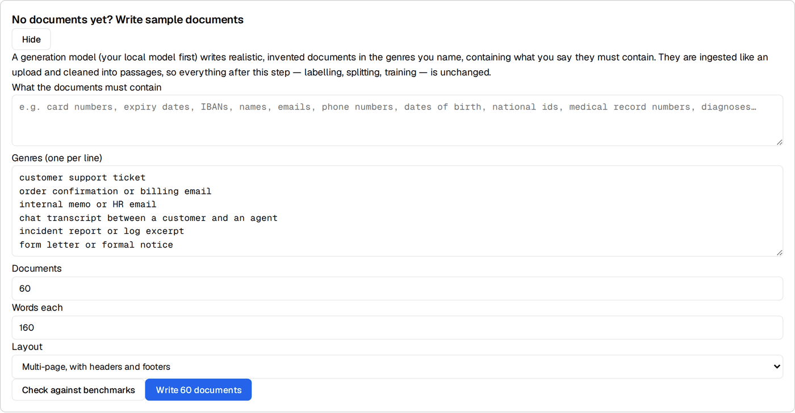
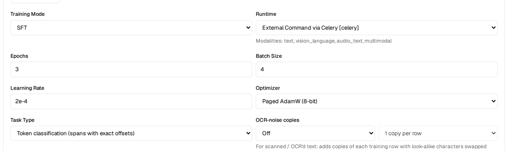
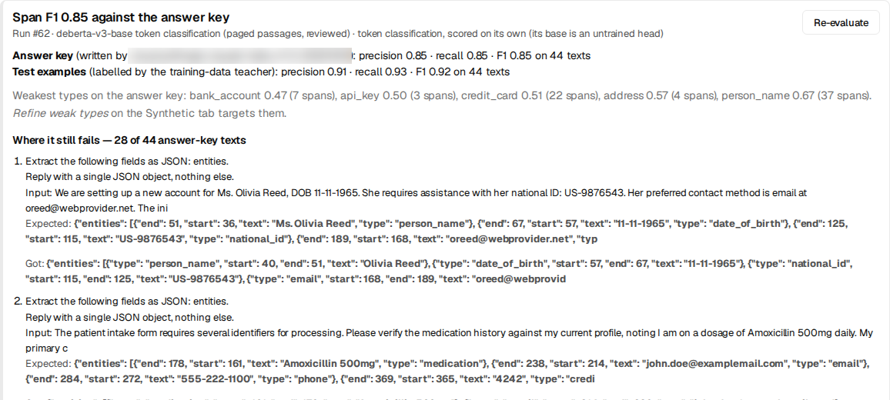
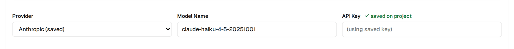

Walkthrough · Span extraction · Compliance
Build a sensitive-data detector from zero, with no labelled data
You want a model that reads a message, a ticket or a clinical note and returns every piece of sensitive data in it — what it is (a card number, a date of birth, a medical record number, your own employee ids) and exactly where it is (character start and end). You have no labelled data, a GPU or a patient CPU, a local Ollama and, optionally, an Anthropic API key. This is the whole build in BrewSLM, one screen at a time, with every number from a real run — including the ones that went down.
Updated 2026-10-18: click paths and screenshots show the new workspace (Data / Train / Results / Ship). The runs, numbers and dates are unchanged.
Where it ends up
The model is a 184M-parameter DeBERTa-v3 token classifier, exported as a plain Hugging Face model. It tags 23 entity types across three regimes plus custom ones: card number, expiry, CVV, bank account and IBAN (PCI); person name, email, phone, address, date of birth, national id, passport, IP address (GDPR); medical record number, health-plan id, diagnosis, medication, provider, visit date (HIPAA); and employee ids, API keys and ticket ids (custom). Training takes about a minute and a half. It reads documents of any length, page headers and footers included.
The honest headline is two numbers, not one, because of who wrote the answer key (run #62, the last in this post):
| Scored against | Precision | Recall | F1 |
|---|---|---|---|
| Labels written by the same local model that wrote the training data | 0.91 | 0.93 | 0.92 |
| An independent answer key written by a second model (Claude Haiku 4.5) | 0.85 | 0.85 | 0.85 |
Both are on the same 44 held-out texts, with strict matching: type, start and end must all be exact. Precision is the share of the spans the model found that are right; recall is the share of the real spans it found; F1 balances the two. For redaction, recall is the one that hurts when it is low: a missed card number leaks.
The second number is the one to believe. Most of this post is about how it got from 0.74 to 0.85, because that is where the craft is. Spoiler: almost none of it was training.
One caveat up front. Every text in this build — training and test — was written by a model. 0.84 says how well the detector reads text like its training data, not how it does on your real tickets. Checking it on a few dozen of your own texts is the step before relying on it (see limits).
Following along today is shorter than our run was. Steps 1–8, 12 and 13 are the path. Steps 9–11 are what happened to us: two of the problems they describe (refine passes that dropped labels, labellers with no shared conventions) are fixed in BrewSLM now, so you won't see the 0.74 drop. The second opinion in Step 10 still matters — do it.
What you need
- BrewSLM running locally — backend, frontend and a Celery worker for training. The Quickstart covers it.
-
Ollama with a mid-size instruction model. We used
gemma4(12B). It writes the sample documents and the training labels, and it costs nothing per call. - Optional: an Anthropic API key for the second-opinion answer key. Every key in this post cost a few cents (estimated; see cost).
- Hardware: we ran on an NVIDIA GB10. The labelled data takes the longest — about 45 minutes of local generation. Training is about a minute on a GPU; on a CPU, expect tens of minutes.
If you already have a labelled PII dataset, the PII span tagger tutorial in the Academy is the shorter path. This post is for when you have nothing.
Step 1 · Create the project
Use + New Project and write a brief in plain words: "Finds, classifies and locates sensitive data in text: card numbers, personal data, health data and our own identifiers, with exact character offsets." The brief only seeds the plan; nothing below depends on its wording.
Step 2 · No documents yet? Write sample documents
A span model learns from text that contains the things it should find. If you can't share real tickets or clinical notes — usually the case for exactly this kind of model — let a model write realistic, invented ones. The first card on Data → Sources does this.

- What the documents must contain — the kinds of data, in your own words. We used: "PCI: card numbers, expiry dates, CVV, IBANs; GDPR: names, emails, phones, addresses, dates of birth, national ids; HIPAA: MRNs, plan ids, diagnoses, medications; custom: EMP-##### employee ids, TCK-#### ticket ids".
- Genres, one per line — where this data actually turns up. We used ten: card-payment support tickets, billing emails, clinical visit notes, insurance claims, HR onboarding emails, GDPR access requests, IT incident reports, bank chat transcripts, travel bookings and pharmacy messages.
- Documents and words each: we used 80 × 170.
- Layout: choose Multi-page, with headers and footers if your real documents have page furniture (letterheads, "Page 2 of 5", confidentiality lines). We added a paged batch later — see Step 12 — and you can choose it from the start.
The Job ran in the bell: 80 documents in 8.4 minutes, 0 failures, ingested as one text file and cleaned into 106 passages. Cleaning cuts on sentence boundaries, so no passage starts mid-word.
Two things happen that you don't see. The model is told every person, number and id
must be invented but realistic in format, and to vary surface forms: numbers with
spaces, dashes or none; each locale's own id formats; names inside greetings as well as
in the body. And the seed documents are cleaned without PII redaction. Ordinary
cleaning masks emails and phones, which is right for real documents and fatal here — our
first attempt fed [REDACTED_EMAIL] to the labeller.
Step 3 · Pick the span-extraction recipe
On Train, the Task row's Change (or More options →
Task type) opens the recipe picker; choose Structured Span Extractor
(span-extraction). A row is {text, entities: [{type, start, end,
text}]}, and evaluation uses the strict span_set scorer: a hit needs the
same type, start and end. On Data → Generate, set Generation mode
to PII / NER span extraction. (Once the project has a split, the step opens in span
mode by itself.)
Step 4 · Write down your labelling conventions — before you label anything
We learned this one last, and it should come first. Two labellers can both be right and still disagree:
- Is a date in a clinical note a date of birth or a visit date?
- Is
GB29 NWBK 6016…a bank account or an IBAN? - Is "Dr. Chen" a person or a provider?
- Does "Ms. Olivia Reed" include the "Ms."?
Without a written rule, each model picks its own. The disagreement then shows up later as "model error" when one model's labels train and another's score.

Open Labelling conventions and write one line per type: what counts and what doesn't. Add suggested wording fills starting text for common type names; you edit it. Two of ours:
date_of_birth: a person's birth date, only when the text says or clearly implies it is the birth date
(DOB, born on, date of birth); any other date is not a date_of_birth
person_name: a private individual's name, including in greetings and signatures — the name only,
without a title (Mr., Ms., Dr.); a clinician named in their professional role is provider_nameEvery model that labels your spans gets the lines for the types it labels: the one that writes the training data, and the one that writes the answer key in Step 10. Fix the edges of a span, not just its category. The last disagreements in our run were all about whether "Ms." belongs to the name.
Step 5 · Generate the labelled rows
Still on Data → Generate, span mode:
- Provider: Local (Ollama). Labelling runs through BrewSLM's synth backend, which turns a thinking model's thinking off. Through the plain OpenAI-compatible URL, gemma spent its whole budget reasoning and returned nothing.
-
Entity types: your full vocabulary, comma-separated. Custom types are
just names:
employee_id,ticket_id, whatever your data has. - Sample randomly from all cleaned chunks on, and Rows to generate 400.
For each batch, the model rewrites a sampled passage with different invented values and returns every entity with its text. BrewSLM then makes the labels trustworthy before anything trains on them:
-
Offsets are verified, not trusted. A model counts characters badly but
copies text well. When
text[start:end]doesn't match, the entity is located by its text and the offsets repaired. It is dropped only if its text isn't in the snippet at all. - A regex pass adds the well-defined types the model skipped (emails, phones, cards, IPs) wherever they don't overlap an existing entity.
- Empty rows are capped (one negative per ten positives), and one-line fragments are dropped. A local model asked for 50 rows at once writes the texts and skips the labels, so a local teacher gets 12 rows per call.
- No silent fallback. A batch that validates to nothing yields nothing and logs which rule emptied it. The task's row count tells the truth.
Our run asked for 400 rows and kept 295, with ~1,950 entities, in 42 minutes — the rest failed validation (no text, or no entity that could be found in its own text). Rows auto-save to the review queue grouped by source; accept them in bulk or reject what you don't like.
Step 6 · Split
Data → Split: 80 / 10 / 10. Ours came out 228 / 28 / 29. The test examples are what every score in this post is measured on.
Every later split, after you add rows, should tick Keep the current test examples: the test rows stay exactly as they are and only train and validation are re-divided, so the new run is scored on the same rows as the last one. (We didn't have it for the early refine passes, which is why the early runs below were scored on 29 and 38 texts.)
Step 7 · Train for exact offsets: token classification
The span recipe's default trains a language model to write the entities as JSON, offsets included. A small model gets the offsets wrong for the same reason the teacher did: it has to count characters. For a detector, train an encoder with a token-classification head instead. Offsets then come from the tokenizer's offset mapping and are exact by construction.

-
Base model:
microsoft/deberta-v3-base— strong on NER, with a fast tokenizer.bert-base-casedalso works. The preflight check accepts encoder models for this task type. - Leave auto epochs on. The head starts from random weights over 47 BIO labels and needs a few hundred optimizer steps whatever the row count, so BrewSLM targets about 400. Our first run used a flat 3 epochs, which was 45 steps, and scored span F1 0.11. With epochs sized to ~400 steps, the same data scored 0.91.
Training takes 46–61 seconds on the GB10. The run saves a plain Hugging
Face model (model/ + tokenizer + label_space.json) and reports
per-epoch span precision, recall and F1, plus a per-type breakdown.
Step 8 · Evaluate this run
On Results → Verdict, click Evaluate this run (it also runs by
itself when training finishes; the bell reports it). A token-classification run is scored
on its own: there is no "better than the base model" here, because its base is an encoder
with an untrained head. BrewSLM tags the raw test texts with the head (no generation) and
scores with span_set: precision, recall and F1 overall, the weakest types,
and for every failing text the entities expected and found, side by side.

The first run (#53) scored P 0.88 / R 0.92 / F1 0.90 on its 29 test texts. It was perfect on email, phone, IBAN, IP and the ids, and weak on passport (0 of 3), medication (0.60), API key and provider name (0.67), and national id (0.76).
Step 9 · Refine the weak types — one button
Refine weak types reads the latest span evaluation and finds every type under F1 0.8. It generates rows that must contain those types while still labelling every other type in your list, sampling from all passages, with a row count sized to how many types are weak. Two refine passes moved passport from 0.00 to 0.62, medication from 0.60 to 0.79, provider name from 0.67 to 0.83 and bank account from 0.00 to 0.71.
A word on "while still labelling every other type". Our first refine passes narrowed the type list to the weak types, and both the model and the regex pass obeyed. Refine rows came back with their phones, emails and names unlabelled, and after the re-split the model learned that a phone number is nothing. The button now keeps the full list and marks the weak types as focus. Keep reading, because this one only surfaced in Step 10.
Step 10 · Get a second opinion on your answer key
Every number so far scored the model against labels written by the same model that
wrote its training data. That measures how well the student copies its teacher, not
how right either of them is. Write answer key with (provider Anthropic,
model claude-haiku-4-5) hands the test texts — unchanged — to a second model.
It asks only for the entities, under your conventions, and verifies every offset. The
result is kept as the project's gold_test set.
Giving BrewSLM the key: on Data → Generate set Provider to Anthropic, paste the key into API Key and click Save key to this project. It is stored encrypted on the project, the field shows "✓ saved on project", and the key is never shown back. Don't paste it into a chat or a ticket.

claude-haiku-4-5-20251001, API Key "✓ saved on project" — the field reads (using saved key). With a fresh key the button reads Save key to this project.
It took 45 seconds for all 44 texts. The bell reports the agreement between the two labellers: strict span F1 of the old labels against the new key. Ours was 0.74. Scored against Haiku's key, run #56 dropped from 0.88 to 0.74.
That drop is the most useful number in this post. It was not the model getting worse; it was the old answer key being wrong in a consistent way. Haiku had found 14 phones, 12 emails and 13 names the local labels didn't have. Every one of those phones and emails matched BrewSLM's own regex. They were missing because of the narrowed refine passes from Step 9.
Step 11 · Fix the labels, not the model
Three label fixes, each measured on the same 44 texts against the second-opinion key:
| Fix | What changed | F1 vs Haiku key |
|---|---|---|
| — (run #56) | Labels from a single local teacher, refine passes with a narrowed type list | 0.74 |
| Regex pass over saved rows → retrain (run #57) | Added 438 missing entities (210 phones, 208 emails) to 254 of 874 rows | 0.79 — phone 0.61 → 0.96, email 0.71 → 1.00 |
| Re-key the test set under the conventions (model unchanged) | Same run #57, new key | 0.79 — so the gap is in the training labels |
| Relabel training rows under the conventions → retrain (run #58) | All 874 rows relabelled by the local model in 39 min; labeller agreement 0.74 → 0.85 | 0.84 — date of birth 0.52 → 0.78, national id 0.69 → 0.92, visit date 0.69 → 0.87, diagnosis 0.74 → 0.96 |
The model and its hyperparameters never changed. Only what it was taught and what it was measured against did.
Two types didn't move: person name (0.65) and bank account (0.21). Both are about the span's edges. All 12 remaining person-name disagreements are one labeller including "Ms." and the other not, and one labeller tags "Account XXXX-3344, routing number 99001122" as one span where the other tags two. The suggested wording now pins those edges down. Re-running both labellers on it is the next step.
Step 12 · Long documents and page furniture
An encoder reads 512 tokens at a time — a page or two. BrewSLM trains, validates, predicts and evaluates anything longer in overlapping windows (128 tokens shared between neighbours; each token's label comes from the window where it sits furthest from an edge), so a document of any length is tagged end to end. You don't switch it on.
We measured it by joining the 44 test texts into four multi-page documents of 780–915 tokens and scoring them against the Haiku key. Before windowing, nothing after token 512 was found:
| Run #58 reading whole documents | F1 | Entities after token 512 found |
|---|---|---|
| Each text alone (the reference) | 0.84 | — |
| Before windowing: cut at 512 tokens | 0.59 | 0 of 126 |
| Windowed | 0.82 | 108 of 126 |
Windows fixed length but not layout. With a "Page 3 of 11" footer between the texts, precision fell to 0.65: the model had never seen page furniture and tagged it — a page number as a diagnosis, a footer date as a visit date. The fix is data, three clicks:
- Write sample documents (Data → Sources) with Layout set to Multi-page, with headers and footers. We wrote 40 more (7 minutes): 129 passages, 83 of them with page lines.
-
Label document passages with your model (Data → Generate). The span
generator in Step 5 rewrites passages into new snippets, which drops the layout; this
labels the passages as they are, under your conventions. 128 passages, 708
entities, 5 minutes. They land in the review queue as
passage_labels— accept them there (pending rows never train). - Split (Data → Split) with Keep the current test examples, and train.
| Multi-page documents, F1 vs the Haiku key | Before (run #59) | Re-split only (run #60) | + paged passages (run #62) |
|---|---|---|---|
| Texts joined by blank lines | 0.82 | 0.84 | 0.84 |
| "Page n of 11" footers | 0.74 | 0.73 | 0.84 |
| A footer and letterhead style the generator never writes | 0.69 | 0.65 | 0.83 |
| The 44 test texts, one by one | 0.84 | 0.83 | 0.85 |
Run #60 is the control: the old training data, only re-split. It didn't move, so the
footer gain is the passages'. It held for a style the model never saw ([3/11]
plus a hospital letterhead), and short texts didn't get worse.
Step 13 · Export and use it
Ship → Package → New export, format Hugging Face,
packages the run's model/ folder as
is (there is no adapter to merge). It is 744 MB in fp32 and runs anywhere Transformers
runs:
from transformers import pipeline
tagger = pipeline("token-classification", model="path/to/model", aggregation_strategy="simple", stride=128)
text = "Hi, Priya Natarajan here (DOB 14/03/1987). Refund £42 to IBAN GB29 NWBK 6016 1331 9268 19 " \
"or reach me at priya.n@example.org / +44 7700 900123 — ticket TCK-5531."
for ent in tagger(text):
start, end = ent["start"], ent["end"]
while start < end and text[start].isspace(): # DeBERTa's tokenizer counts the leading space
start += 1
print(f"{ent['entity_group']:15s} {start:4d}-{end:<4d} {ent['score']:.2f} {text[start:end]!r}")Run #62's export on that text, verbatim. We wrote the text for this post; it's one example in a UK format the model never saw, not a benchmark — the tables are the measurement.
person_name 4-19 0.99 'Priya Natarajan'
date_of_birth 30-40 0.99 '14/03/1987'
iban 62-89 0.98 'GB29 NWBK 6016 1331 9268 19'
email 105-124 1.00 'priya.n@example.org'
phone 127-142 0.98 '+44 7700 900123'
ticket_id 152-160 0.95 'TCK-5531'
start and end are character offsets into the string you
passed. entity_group is your type name, custom types included. The two-line
trim is needed because DeBERTa's tokenizer attaches the preceding space to a word, so the
pipeline's start can sit one character early. BrewSLM's own evaluation does the same
trim. stride=128 makes the pipeline window long texts the way BrewSLM does;
without it, the pipeline stops at 512 tokens.
The whole scoreboard
| Run | What it was trained on | vs local labels | vs second-opinion key (44 texts) |
|---|---|---|---|
| #52 | 228 training rows, 3 epochs (45 steps) | 0.11 (validation) | — |
| #53 | Same rows, epochs sized to ~400 steps | 0.90 (29 test texts) | — |
| #55 | +87 refine rows for weak types | 0.90 (38 test texts) | — |
| #56 | +55 rows from Refine weak types | 0.88 (44) | 0.74 |
| #57 | + regex pass over saved rows (438 entities) | 0.89 (44) | 0.79 |
| #58 | + all rows relabelled under the conventions | 0.89 (44) | 0.84 |
| #62 | + 128 passages from paged documents, labelled as they are | 0.92 (44) | 0.85 |
Read the right-hand column. The left-hand one hardly moved while the model got much better, because a key written by the teacher can't see what the teacher gets wrong. The test split grew as refine rows were added, so the early left-hand numbers are on fewer texts. With 44 test texts, a type with 3 gold spans moves in steps of 0.33, so treat per-type numbers on rare types as directional.
Time and cost
| Step | Time | Cost |
|---|---|---|
| 80 sample documents (local gemma4) | 8.4 min | local |
| 295 labelled rows (local) | 42 min | local |
| Refine pass, 55 rows (local) | 5 min | local |
| Training one run (GB10) | 46–63 s | local |
| Evaluation, 44 texts | seconds | local |
| Answer key, 44 texts (Haiku 4.5) | 45–60 s | 8 calls — a few cents (estimated) |
| Relabel 874 training rows under conventions (local) | 39 min | local |
| 40 paged documents + labelling their 129 passages (local) | 7 + 5 min | local |
What broke on the way
Each of these was found by this build, fixed in BrewSLM rather than worked around, and is now covered by a test:
- Cleaning redacted the "PII" in the invented seed documents.
- The labeller dropped entities whose offsets were wrong instead of locating them by their text.
- An unusable teacher reply fell back to regex-tagged sentence fragments that looked like data.
- A thinking model through the OpenAI-compatible URL returned empty content.
- Fifty rows per call made the local model skip the labels.
- The first token-classification run had 45 optimizer steps.
- The held-out eval measured perplexity, because the span recipe's adapter didn't declare its task profile.
- Refine passes narrowed the type list, leaving phones and emails unlabelled.
- The second-opinion key lost batches to replies cut off mid-JSON. Replies are now compact, and a failed batch is split rather than re-sent.
- Training, evaluation and the exported tokenizer all stopped at 512 tokens, and the export claimed an unlimited length, so
stridedid nothing. - "Evaluate this run" skipped token-classification runs; there was no UI to save the Anthropic key on the synthetic-data step (now Data → Generate); and rows written without an id could never be accepted from the review queue, so they silently never trained.
Limits, and what's next
- No real-world score yet. All the text here is invented. Before you rely on the detector, label a few dozen of your own texts (have a second model draft the labels, then correct them by hand) and score it on those. Expect it to be lower.
- Scanned documents. Long and paged text works (Step 12). Under simulated OCR noise (characters swapped for look-alikes: O→0, l→1, S→5, e→c…) the multi-page F1 holds at 2% of those characters (−0.01), loses about 0.07 at 5% and 0.15 at 10%. OCR-noise copies (Train → More options → Model and hyperparameters, for token classification) trains on noisy copies of your rows: with one copy at up to 10%, F1 at 10% noise went 0.69 → 0.79 and at 20% 0.51 → 0.75, for 0.02 on clean text. Turn it on when your documents come from scans. Real scans also break words and lines, which this doesn't simulate.
- English only so far. Multilingual encoders, sample documents per language and an evaluation slice per language come next.
- Compliance as data. Named bundles of types, conventions and regime tags (PCI-DSS, GDPR, HIPAA, CCPA, your own), with recall per regime in the eval report.
- Custom patterns. Project-level regexes for your own id formats, fed into the same regex pass.
- Recall over precision. For redaction, a missed span is worse than an extra one. Per-type confidence thresholds for a high-recall mode are planned. Until then, keep a human in the loop for anything that leaves your perimeter.
The same build from a script
Every button above is an API call. The core path, against a running BrewSLM:
# sample documents → passages
POST /api/projects/{id}/flows/seed-documents {"kinds": "...", "genres": [...], "count": 80, "words": 170, "backend": "ollama"}
# conventions
PUT /api/projects/{id}/synthetic/type-definitions {"definitions": {"date_of_birth": "...", ...}}
# labelled rows (auto-saved when the task finishes)
POST /api/projects/{id}/synthetic/generate-spans-async {"target_rows": 400, "entity_types": [...], "backend": "ollama", "use_all_chunks": true}
POST /api/projects/{id}/dataset/split {"include_types": ["synthetic"], "task_profile": "structured_extraction"}
POST /api/projects/{id}/training/experiments {"name": "...", "config": {"base_model": "microsoft/deberta-v3-base", "task_type": "token_classification"}}
POST /api/projects/{id}/training/experiments/{exp}/start
POST /api/projects/{id}/evaluation/run-heldout?async_job=true {"experiment_id": exp, "dataset_name": "test", "eval_type": "f1"}
# refine, second opinion, label repair
GET /api/projects/{id}/synthetic/weak-types?threshold=0.8
POST /api/projects/{id}/synthetic/relabel-answer-key {"split": "test", "backend": "cloud:anthropic:claude-haiku-4-5-20251001"}
POST /api/projects/{id}/synthetic/relabel-answer-key {"target": "training", "backend": "ollama"}
POST /api/projects/{id}/synthetic/spans/regex-augment
# page furniture: paged documents → label passages as they are → accept → split keeping the test rows
POST /api/projects/{id}/flows/seed-documents {..., "layout": "paged"}
POST /api/projects/{id}/synthetic/relabel-answer-key {"target": "passages", "document_id": doc, "backend": "ollama"}
POST /api/projects/{id}/synthetic/review-queue/bulk-update-by-source {"source": "passage_labels:doc=<doc>", "action": "accept"}
POST /api/projects/{id}/dataset/split {..., "keep_test": true}
# evaluate (what "Evaluate this run" calls)
POST /api/projects/{id}/evaluation/summary/lift-check {"experiment_id": exp}
# ship
POST /api/projects/{id}/export/create {"experiment_id": exp, "export_format": "huggingface"}DeBERTa-v3 is MIT-licensed, and every person, card and record in the training data was invented, so the exported model carries no one's real data.
The lesson that generalises beyond PII: get a second opinion on your answer key before you trust a score, and write down your labelling conventions before you label anything. The model here was the easy part.